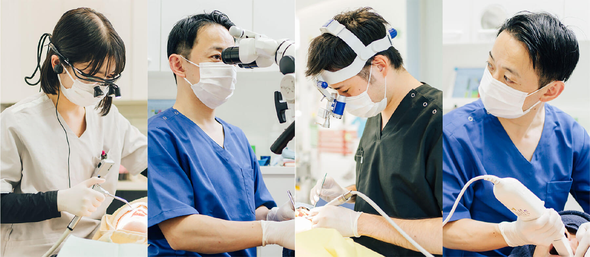
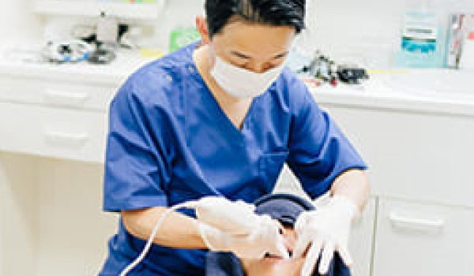
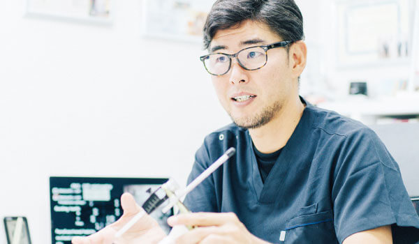
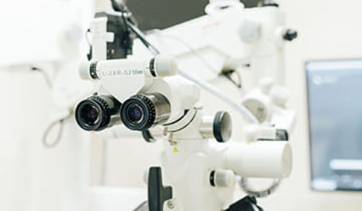
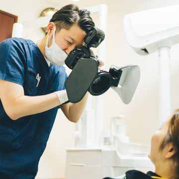
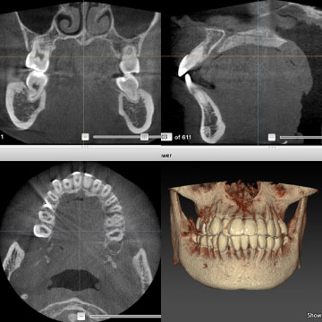
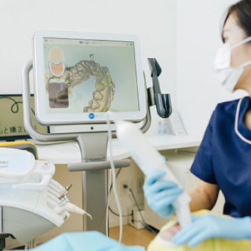
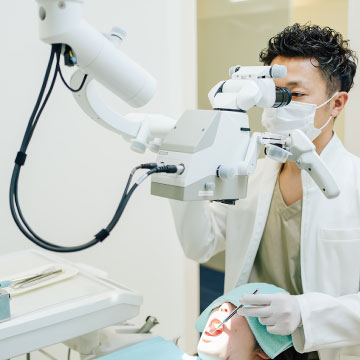
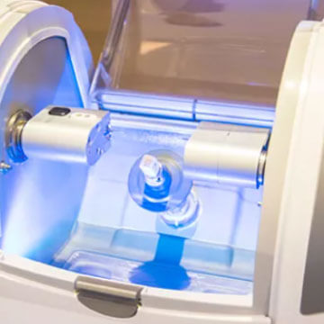

総合力であなたの「日常」を守る
News 新着情報

△ 第2週・第4週に祝日がある場合､その週の木曜は診療
※最終受付は18:30となります。
-
〒569-0804
大阪府高槻市紺屋町7-27桃陽2F（エレベーター有） - JR京都線「高槻駅」より徒歩3分
- 阪急電鉄京都本線「高槻市駅」より徒歩5分
Concept
3つの柱であなたの豊かな日常をずっとサポート
-

01 知識・技術
-

02 寄り添い
-

03 設備
「口腔内の不安」や「お口まわりのコンプレックス」を払しょくし､年齢を重ねてもずっと､食事を楽しみ､豊かな日常生活を送っていただく――それが私たちのゴールです。健康なときには気づかないかもしれませんが､虫歯や歯周病などになると､平穏な生活の大切さを痛感するのではないでしょうか？
私たちは､お口まわりのお悩みのない平穏な日常を取り戻し､継続的なサポートをするために､日々の診療に努めています。この目標の実現のため､当クリニックでは3つの柱を立てております。
- 1つ目は､日々進歩する医療の新しい知識や技術の研鑽を重ねること。
- 2つ目は､患者様の想いに寄り添って診療をすること。
- 3つ目は､精密な治療を叶えるさまざまな機器をそろえることです。
Knowledge
医学的根拠に基づく｢知識と技術｣
医療技術は日々進歩しています。歯科医療も、絶えず新しい治療システムや設備、歯科材料や器具が開発されています。より確実で、より正確で、より安心できる医療をご提供するためには、新たな技術の習得が欠かせません。そのため、積極的に学会や勉強会に参加して専門的な知識を深めるとともに、すべてのスタッフのレベルアップにも努めております。勘や個人の見解に頼るのではなく、医学的根拠に基づいた、今、もっともよいと思われる治療のご提供を目指します。
- 日本歯科保存学会専門医
- 日本補綴歯科学会専門医
- 日本小児歯科学会専門医
- 認定歯科衛生士
外科治療を行う
個室の特別診療室
プライベートに配慮した
カウンセリングルーム
安心の担当医
担当衛生士制
Hospitality
プライベートな空間で 患者様に「寄り添う診療」
一人ひとりの患者様に安心してご来院いただけるよう、ホスピタリティ精神を大切に、プライバシーに配慮しております。カウンセリングは専用のスペースで、外科治療（インプラント治療や歯周再生治療など）は個室の特別診療室でのご提供です。お口の健康をずっと守るためのサポート体制として、担当医・担当歯科衛生士制を採用しています。いつも同じスタッフが話しやすい環境を保ちながら、患者様のお悩みをうかがい、ご要望や理想を叶えるために、親身になって診療いたします。
Equipment
詳細データに基づく診断と
精密な診療に導くためのさまざまな「設備」

口腔内カメラ
患者様に合う治療をご提供するためには、必要な検査を行い、十分な詳細情報を得たうえでの診断が欠かせません。ただし、精密治療を行うための機器をそろえ、使いこなしてこそ、それは意味をなします。当クリニックでは、患者様の負担を軽減しながらシミュレーションもできる「プライムスキャン」や、精密診断のための「歯科用CT」、拡大視しながら治療できる「マイクロスコープ」、セラミックの人工歯の自動作製が可能な「セレックシステム」などを導入し、日々診療に活用しております。

歯科用CT
患者様に合う治療をご提供するためには、必要な検査を行い、十分な詳細情報を得たうえでの診断が欠かせません。ただし、精密治療を行うための機器をそろえ、使いこなしてこそ、それは意味をなします。当クリニックでは、患者様の負担を軽減しながらシミュレーションもできる「プライムスキャン」や、精密診断のための「歯科用CT」、拡大視しながら治療できる「マイクロスコープ」、セラミックの人工歯の自動作製が可能な「セレックシステム」などを導入し、日々診療に活用しております。

プライムスキャン
患者様に合う治療をご提供するためには、必要な検査を行い、十分な詳細情報を得たうえでの診断が欠かせません。ただし、精密治療を行うための機器をそろえ、使いこなしてこそ、それは意味をなします。当クリニックでは、患者様の負担を軽減しながらシミュレーションもできる「プライムスキャン」や、精密診断のための「歯科用CT」、拡大視しながら治療できる「マイクロスコープ」、セラミックの人工歯の自動作製が可能な「セレックシステム」などを導入し、日々診療に活用しております。

マイクロスコープ
患者様に合う治療をご提供するためには、必要な検査を行い、十分な詳細情報を得たうえでの診断が欠かせません。ただし、精密治療を行うための機器をそろえ、使いこなしてこそ、それは意味をなします。当クリニックでは、患者様の負担を軽減しながらシミュレーションもできる「プライムスキャン」や、精密診断のための「歯科用CT」、拡大視しながら治療できる「マイクロスコープ」、セラミックの人工歯の自動作製が可能な「セレックシステム」などを導入し、日々診療に活用しております。

セレック
患者様に合う治療をご提供するためには、必要な検査を行い、十分な詳細情報を得たうえでの診断が欠かせません。ただし、精密治療を行うための機器をそろえ、使いこなしてこそ、それは意味をなします。当クリニックでは、患者様の負担を軽減しながらシミュレーションもできる「プライムスキャン」や、精密診断のための「歯科用CT」、拡大視しながら治療できる「マイクロスコープ」、セラミックの人工歯の自動作製が可能な「セレックシステム」などを導入し、日々診療に活用しております。
セレック
患者様に合う治療をご提供するためには、必要な検査を行い、十分な詳細情報を得たうえでの診断が欠かせません。ただし、精密治療を行うための機器をそろえ、使いこなしてこそ、それは意味をなします。当クリニックでは、患者様の負担を軽減しながらシミュレーションもできる「プライムスキャン」や、精密診断のための「歯科用CT」、拡大視しながら治療できる「マイクロスコープ」、セラミックの人工歯の自動作製が可能な「セレックシステム」などを導入し、日々診療に活用しております。
Cleanliness
安心・安全のための衛生管理
医療施設として当然ではありますが、当クリニックでは衛生管理を徹底し、さまざまな院内感染予防対策を講じております。治療器具はその形状や材質に合わせて、ガス滅菌器やハンドピース用滅菌器、超音波洗浄器、さらには高温高圧滅菌器などを活用し、衛生管理を行っています。使用した器具は患者様ごとに滅菌・殺菌処理し、使いまわすことはありません。また、治療の際には口腔外バキュームを使用するとともに、空気清浄機を稼働させて院内の空気にも気を使っております。
詳しくはこちらPrecautions
ご予約に関する患者様へのお願い
いつも河原歯科クリニックにご来院いただき、誠にありがとうございます。当クリニックはご予約制を採用しております。
それは、患者様をできるだけお待たせさせず、担当歯科医師や担当歯科衛生士が診療時間内にスムーズに、
内容の濃い診療を行うためです。つきましては、治療のご予約についてお願いがございます。
- 01. ご予約のキャンセルや変更は、前日までにご連絡ください。
-
02.
お約束のお時間に遅れるときも、必ずご連絡をお願いします。
また、お痛みがあるなどの急を要するときにも、ご連絡のうえのご来院をお願いいたします。 -
03.
ご連絡なしに、ご予約時間に遅れられた際には、やむを得ず、
別日に変更させていただく場合がございます。ご了承ください。 - 04. 当日のキャンセルや無断キャンセルが何回もあるとご予約が取りづらくなります。
救急患者様のご来院、予定していた患者様の遅れてのご来院、予想外の治療時間の延長などにより、
お待たせすることがございます｡できるだけご迷惑をかけないよう､努力を続けてまいりますので､ご理解ご協力のほど､よろしくお願いいたします｡
Treatment
なかなか 治らない方・再発 をくり返す方へ ゴールを見据えた計画的な包括治療
虫歯も歯周病も再発しやすい病気です。そもそも、発症・進行するには原因がありますので、痛みのある部分だけ、症状のあるところだけの場当たり的な治療で終わりにすると、再発・再治療をくり返すことになりかねません。しっかり治すためには、お口のトラブルの原因を根本的に取り除かなければならないのです。長期的な視点に立ち、お口まわりの健康をずっと保つには、口腔内全体を診てゴールを設定した治療プランが必要です。当クリニックでは、将来を長い目で見て予後を考え、ゴールを見据えた包括的な治療をご提供しております。